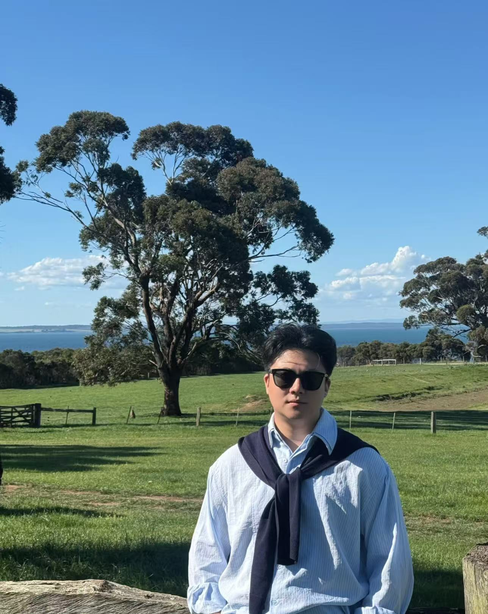
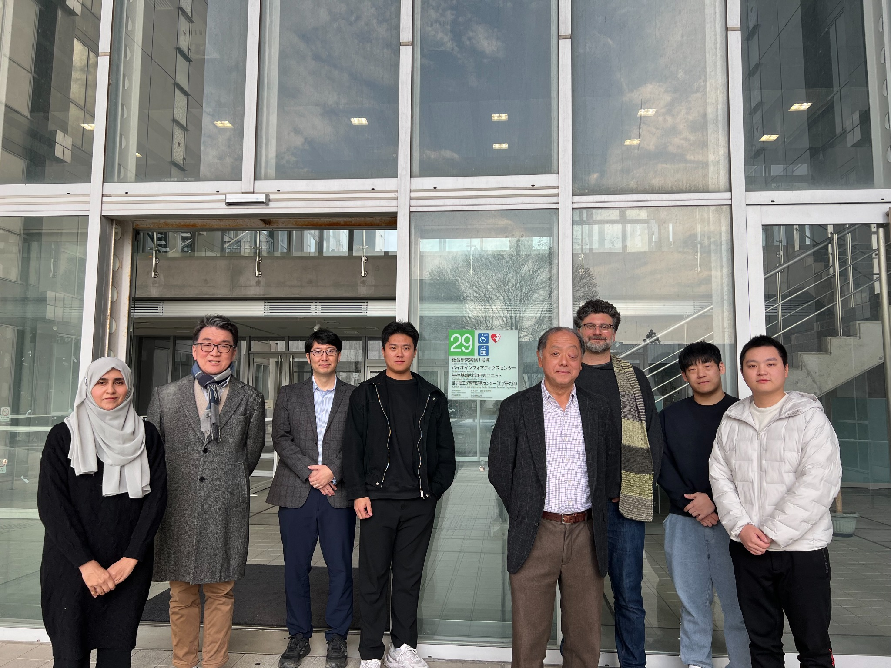
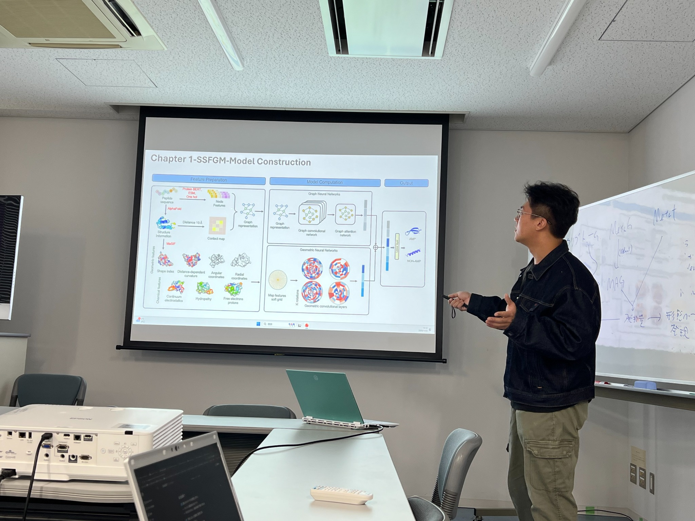

SSFGM-Model
Integrating sequence, structure and molecular surface information for antimicrobial peptide identification.
AI for antimicrobial
peptide discovery.
I use AI agents to advance the discovery and design of antimicrobial peptides as potential therapeutics.

Integrating sequence, structure and molecular surface information for antimicrobial peptide identification.
Predicting antimicrobial activity and pathogen-specific potency with structure-aware graph learning.
Assessing peptide toxicity and hemolytic potency with complementary prediction models.
Designing and prioritizing antimicrobial peptides with activity and safety objectives.
Discovering antimicrobial peptide candidates from deep-sea genomic data.
Predicting mutation effects to support antibody affinity engineering.
GeoMIC · DOI: 10.1039/D6CC03538H
93, 102685
26(3), bbaf261 · † Equal contribution
I am based in Monash University’s Faculty of Engineering and collaborate with the Biomedicine Discovery Institute.
University of Tokyo & Kyoto University, Japan January–February 2026

